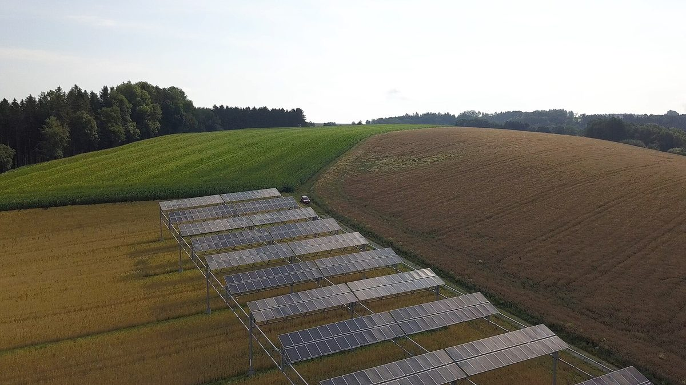

영농형 태양광법 12월 17일 시행 앞두고 "농협에도 참여 길 열어야"…발전사업자 자격·종합지원센터 지정 제정안 모두 빠져

허가 기간 최대 8년에서 23년으로 늘지만 사업자는 농민·주민 10명 이상 협동조합 등으로 한정…충북 오창 현장 "고령 농가 혼자 실경작률 80%·차광률 30% 기준 지키기 어렵다"
영농형태양광사업법이 12월 17일 시행을 한 달여 앞둔 가운데, 농협이 발전사업자 자격에서 빠진 데 이어 시행령 제정안의 종합지원센터 지정기관에도 들지 못해 농촌 현장에서 참여 길을 열어 달라는 목소리가 나오고 있다. 6월 16일 공포된 이 법은 농지 타용도 일시사용허가 기간을 지금의 최대 8년(최초 5년, 연장 3년)에서 최대 23년(최초 5년, 연장 최대 18년)으로 늘리지만, 발전사업자는 인근에 3년 이상 살며 3년간 농사지은 농민, 1년 이상 거주 주민 10명 이상이 세운 주민참여협동조합, 영농조합법인, 국가관리간척지의 농업회사법인으로 한정했다. 농림축산식품부가 9월 16~28일 입법예고한 시행령 제정안은 실태조사·교육·컨설팅·연구개발을 맡을 종합지원센터 지정기관으로 한국농어촌공사·한국농업기술진흥원·농림수산식품교육문화정보원 3곳을 적어, 농협은 간접 참여 통로도 없는 상태다. 충북 청주 오창읍 괴정리 농지 1,983㎡(600평)에 영농형 태양광을 직접 설치해 마늘과 표고버섯을 기르고 있는 김영우 오창농협 조합장은 실경작률 80% 이상, 차광률 30% 미만 같은 기준을 농가가 혼자 지키기 어렵고, 검증되지 않은 사업자가 들어오면 과도한 시공비와 부실 시공, 폐업 뒤 관리 공백으로 농민이 피해를 볼 수 있다고 우려했다. 오현광 청주시농업인단체협의회장은 고령 농민이 초기 비용과 긴 회수 기간 때문에 망설인다며 "농협이 참여농가를 모집해 사업을 규모화하면 농민 참여도가 올라갈 것"이라고 말했고, 문금주 더불어민주당 의원도 10월 6일 낸 자료에서 농협이 사업성 검토·금융·교육·시공·운영관리를 지원할 제도 기반을 요구했다. 농식품부가 농협 참여 문제를 어떻게 볼지는 아직 알려지지 않았다.
시민에너지 관점
허가 기간이 23년으로 늘어난다는 것은 한 마을이 한 세대 가까이 발전소를 돌봐야 한다는 뜻이고, 실경작률 80%와 차광률 30% 기준을 그 긴 시간 동안 지키는 일을 고령 농가 혼자 떠안기는 어렵다. 농협이 들어오면 결국 농협이 사업자가 되어 주민 몫이 줄어드는 것 아니냐는 걱정도 나올 수 있지만, 법이 이미 주민 10명 이상의 주민참여협동조합에 자격을 준 만큼 소유는 농민과 주민 협동조합에 두고 지역 조직은 모집·금융·시공 관리·사후관리를 맡는 지원자로 나누면 두 요구를 함께 풀 수 있다. 발전소의 주인이 마을이어야 전기 판매 수입이 농촌에 남고, 그 주인을 곁에서 붙잡아 줄 믿을 만한 지역 조직이 있어야 부실 시공과 폐업 피해에서 주민을 지킬 수 있다. 시행령이 확정되기 전에 종합지원센터의 역할과 지역 조직의 지원 범위를 주민 소유를 돕는 쪽으로 분명히 적어야 한다.
출처: 농민신문 2026-10-31 조영창 원문 보기
韓国の営農型太陽光法、12月17日施行を前に「農協にも参加の道を」…発電事業者資格・総合支援センター指定の施行令案いずれにも入らず
許可期間は最長8年から23年に延びるが、事業者は農民・住民10人以上の協同組合などに限定…忠清北道梧倉の現場「高齢農家だけで実耕作率80%・遮光率30%の基準を守るのは難しい」
韓国の営農型太陽光事業法が12月17日の施行まで1か月余りとなるなか、農協が発電事業者の資格から外れたうえ、施行令制定案の総合支援センター指定機関にも入らなかったことから、農村の現場で参加の道を開くよう求める声が出ている。6月16日に公布された同法は、農地の他用途一時使用許可の期間を現行の最長8年（当初5年、延長3年）から最長23年（当初5年、延長最長18年）に延ばす一方、発電事業者を、近隣に3年以上住み3年間農業を営んだ農民、1年以上居住する住民10人以上が設立した住民参加協同組合、営農組合法人、国家管理干拓地の農業会社法人に限った。農林畜産食品部が9月16～28日に立法予告した施行令制定案は、実態調査・教育・コンサルティング・研究開発を担う総合支援センターの指定機関として韓国農漁村公社・韓国農業技術振興院・農林水産食品教育文化情報院の3機関を挙げており、農協には間接的に参加する経路もない。忠清北道清州市梧倉邑槐亭里の農地1,983㎡（600坪）に自ら営農型太陽光を設置し、ニンニクとシイタケを育てているキム・ヨンウ梧倉農協組合長は、実耕作率80%以上、遮光率30%未満といった基準を農家だけで守るのは難しく、検証されていない事業者が入れば過大な施工費や手抜き工事、廃業後の管理の空白で農民が被害を受けかねないと懸念を示した。オ・ヒョングァン清州市農業者団体協議会長は、高齢農家が初期費用と長い回収期間のためにためらっているとして「農協が参加農家を募って事業を規模化すれば農民の参加は増える」と述べ、ムン・グムジュ共に民主党議員も10月6日に出した資料で、農協が事業性の検討・金融・教育・施工・運営管理を支援できる制度的基盤を求めた。農林畜産食品部が農協の参加問題をどう考えているかはまだ明らかになっていない。
市民エネルギーの視点
許可期間が23年に延びるということは、一つの集落が一世代近く発電所の面倒を見なければならないということであり、実耕作率80%と遮光率30%の基準をその長い期間守り続ける仕事を高齢農家だけに負わせるのは難しい。農協が入れば結局は農協が事業者となり住民の取り分が減るのではないかという懸念も出うるが、法がすでに住民10人以上の住民参加協同組合に資格を与えている以上、所有は農民と住民の協同組合に置き、地域の組織は募集・金融・施工管理・事後管理を担う支援役に分ければ、二つの要求を同時に満たせる。発電所の持ち主が集落であってこそ売電収入が農村に残り、その持ち主をそばで支える信頼できる地域組織があってこそ、手抜き工事や廃業の被害から住民を守ることができる。施行令が確定する前に、総合支援センターの役割と地域組織の支援範囲を、住民による所有を後押しする方向で明確に書き込むべきだ。
出典: 農民新聞 2026-10-31 チョ・ヨンチャン 原文を読む
韩国农光互补法12月17日施行在即，"也应给农协参与机会"…发电业者资格和综合支援中心指定草案均未纳入
许可期限由最长8年延至23年，但业者限于农民、10名以上居民组成的合作社等…忠清北道梧仓现场："高龄农户单靠自己难以守住实际耕作率80%、遮光率30%的标准"
韩国《农光互补发电事业法》距12月17日施行只剩一个多月，农协不仅被排除在发电业者资格之外，也未被列入施行令制定草案中的综合支援中心指定机构，农村现场随之出现应为农协打开参与渠道的呼声。该法于6月16日公布，将农地临时改作他用的许可期限由现行最长8年（首次5年、延长3年）延长至最长23年（首次5年、最多延长18年），但把发电业者限定为：在附近居住3年以上并从事农业经营3年的农民、由在当地居住1年以上的10名以上居民设立的居民参与合作社、农业合作法人，以及在国家管理围垦地开展业务的农业公司法人。农林畜产食品部于9月16日至28日预告的施行令制定草案，把负责实况调查、教育、咨询和研发的综合支援中心指定机构列为韩国农渔村公社、韩国农业技术振兴院和农林水产食品教育文化信息院3家，农协连间接参与的途径也没有。在忠清北道清州市梧仓邑槐亭里1,983平方米（600坪）农地上亲自安装农光互补设施、种植大蒜和香菇的梧仓农协组合长Kim Young-woo担心，单靠农户难以遵守实际耕作率80%以上、遮光率不足30%等标准，一旦未经验证的业者进入，过高的施工费、劣质施工以及停业后的管理真空都可能让农民受损。清州市农业人团体协议会会长Oh Hyun-kwang表示，高龄农民因初期费用高、回收期长而犹豫不决，"如果农协招募参与农户、扩大事业规模，农民的参与度就会提高"；共同民主党议员Moon Geum-ju也在10月6日发布的资料中，要求建立让农协能够支持可行性评估、金融、教育、施工和运营管理的制度基础。农林畜产食品部如何看待农协参与问题，目前尚不清楚。
市民能源视角
许可期限延长到23年，意味着一个村庄要照看发电站近一代人的时间，而要在这么长的时间里持续守住实际耕作率80%和遮光率30%的标准，很难让高龄农户独自承担。有人可能担心农协一旦进入，最终会由农协当业者、挤占居民的份额；但既然法律已经赋予10名以上居民组成的居民参与合作社资格，只要把所有权留给农民和居民合作社，让地方组织承担招募、金融、施工管理和后续管理等支援角色，两种诉求就能同时兼顾。发电站的主人是村庄，卖电收入才能留在农村；身边有值得信赖的地方组织扶持这些主人，才能保护居民免受劣质施工和停业之害。应当在施行令定案之前，把综合支援中心的职责和地方组织的支援范围，明确写成服务于居民所有的方向。
来源: 农民新闻 2026-10-31 Cho Young-chang 查看原文
Ahead of Korea's agrivoltaics act taking effect on December 17, calls grow to "let Nonghyup take part" as farm co-ops are left out of both developer eligibility and the draft support-centre list
Permits stretch from up to 8 years to 23, but developers are limited to farmers, cooperatives of 10 or more residents and similar bodies; at an Ochang site in North Chungcheong, a co-op head says elderly farmers will struggle alone to meet the 80% cultivation and 30% shading rules
With South Korea's Agrivoltaics Act a little over a month from taking effect on December 17, voices in the countryside are urging that the National Agricultural Cooperative Federation's local cooperatives (Nonghyup) be given a way in, after they were excluded from eligibility as power developers and also left off the list of designated support centres in the draft enforcement decree. The law, promulgated on June 16, extends permits for temporary non-farm use of farmland from a maximum of 8 years today (5 years initially plus a 3-year extension) to as many as 23 years (5 years plus up to 18), but it limits developers to farmers who have lived nearby for at least 3 years and farmed for 3 years, resident-participation cooperatives set up by 10 or more people living locally for at least a year, farming association corporations, and agricultural companies operating on state-managed reclaimed land. The draft decree that the agriculture ministry put out for public notice from September 16 to 28 names three bodies as comprehensive support centres for surveys, training, consulting and research: the Korea Rural Community Corporation, the Korea Agriculture Technology Promotion Agency, and the Korea Agency of Education, Promotion and Information Service in Food, Agriculture, Forestry and Fisheries, leaving cooperatives without even an indirect route. Kim Young-woo, head of the Ochang cooperative in Cheongju, who has installed agrivoltaics himself on 1,983 square metres (600 pyeong) of farmland in Goejeong-ri, Ochang-eup, where he grows garlic and shiitake mushrooms, worried that farm households will find it hard on their own to keep cultivation at 80% or more and shading below 30%, and that unproven developers could leave farmers facing inflated construction costs, shoddy work and no maintenance after a business folds. Oh Hyun-kwang, chair of the Cheongju farmers' organisations council, said elderly farmers hesitate because of high upfront costs and long payback periods, adding that "if Nonghyup recruits participating farms and scales up the projects, farmer participation will rise," while Democratic Party lawmaker Moon Geum-ju, in material released on October 6, called for a legal basis for cooperatives to support feasibility reviews, finance, training, construction and operation. How the ministry views the question of cooperative participation has not been made known.
Citizen Energy View
A 23-year permit means a village must look after a power plant for close to a generation, and it is hard to leave elderly farmers alone to meet the 80% cultivation and 30% shading rules over that long a period. Some may fear that letting cooperatives in would simply make them the developer and squeeze out residents' share, but since the law already grants eligibility to resident-participation cooperatives of 10 or more people, ownership can stay with farmers and resident cooperatives while local organisations act as supporters handling recruitment, finance, construction oversight and after-care, meeting both demands at once. Only when the village owns the plant does electricity income stay in the countryside, and only with a trusted local organisation standing beside those owners can residents be protected from poor construction and abandoned projects. Before the decree is finalised, the role of the support centres and the scope of local organisations' help should be written down clearly in a way that backs resident ownership.
Source: The Farmers Newspaper (Nongmin Shinmun) 2026-10-31 Cho Young-chang Read the original